AI에 매번 따라가는 파일들
AI에게 프롬프트를 보내면 내가 쓴 문장만 가는 게 아니에요. 발표자 Kyle은 화이트보드에 상자 일곱 개를 늘어놓고, 요청 하나에 무엇이 함께 실려 가는지부터 짚어요. 윗줄의 SYSTEM.md, AGENTS.md, SKILL.md, Docs, Prompt와 아랫줄의 CLAUDE.md, Codebase예요.
CLAUDE.md가 AGENTS.md 바로 아래 같은 색으로 놓인 건 둘이 같은 역할이라서예요.
영상 01:00에서 보기
하나씩 보면
시스템 프롬프트는 Claude Code나 Pi 같은 도구가 직접 써 둔 기본 지시예요. Pi처럼 바꿀 수 있게 해 주는 도구도 있지만, 대부분은 손댈 수 없어요. 그래서 발표자는 이 상자를 화이트보드에서 지우고 넘어가요. 그래도 매 요청에 실려 간다는 사실은 그대로예요.
AGENTS.md는 저장소 루트에 두는 파일이에요. 프롬프트를 보낼 때마다 이 파일의 내용 전체가 함께 실려 가요. Claude Code에서는 CLAUDE.md, Gemini에서는 GEMINI.md라는 이름을 쓰지만 하는 일은 같아요. 발표자는 Claude가 AGENTS.md 표준을 따르지 않아서 CLAUDE.md를 따로 만들어야 한다고 설명해요.
스킬은 특정 작업 때 꺼내 읽는 마크다운 묶음이에요. 예를 들어 TypeScript 스킬이 있으면, TypeScript 작업을 할 때 그 내용을 읽어 프롬프트에 함께 넣어요. 문서와 코드도 문제를 푸는 데 필요하면 읽혀요.
아래 그림은 발표자의 설명을 '매번 실리는 것'과 '필요할 때만 읽는 것'으로 나눠 다시 그린 거예요. 스킬의 이름과 설명이 왼쪽에 있는 이유는 마지막 섹션에서 나와요.
AGENTS.md부터 손보라고 하는 이유예요.그래서 가장 먼저 고칠 곳은 매번 통째로 실려 가는 AGENTS.md예요. 발표자는 이 파일이 나쁘면 프롬프트를 아무리 잘 써도 모든 요청이 오염된다고 말해요. 이 영상은 코드 자체가 아니라 이런 설정 파일을 어떻게 쓰는지를 다뤄요.
나쁜 AGENTS.md는 어떻게 생겼나
발표자는 큰 회사들의 실제 AGENTS.md를 나쁜 예로 보여 줘요. OpenAI Codex, Apache Airflow, VS Code 저장소예요. 셋 다 문제는 하나, 너무 크다는 거예요.
Codex: 문제가 생길 때마다 덧붙인 목록
Codex의 파일은 Rust/codex-rs 절 아래 글머리표가 끝없이 이어져요. 화면 맨 위 항목은 'crate 이름에는 codex- 접두사를 붙인다'예요. 발표자는 처음엔 짧던 파일에 문제가 생길 때마다 이런 줄을 하나씩 더하다 보니 이렇게 됐을 거라고 추측해요.
더 내려가면 코드 리뷰 규칙, API(Application Programming Interface) 호환성 변경, 터미널 UI(User Interface) 스타일, 테스트 규칙, 스냅숏 테스트가 한 파일에 섞여 있어요. 스타일 규칙은 두 군데에 중복으로 나오기도 해요. 모든 요청이 코드 리뷰나 테스트를 하는 건 아니니, 상관없는 요청에도 토큰과 계산을 버리는 셈이에요.
다만 한 곳은 잘했다고 짚어요. 'TUI style conventions' 절은 규칙을 직접 적지 않고 codex-rs/tui/styles.md를 보라는 한 줄만 남겼어요. 스타일 작업을 할 때만 에이전트가 그 파일을 열어 읽으면 되니, 평소 컨텍스트는 작게 유지돼요.
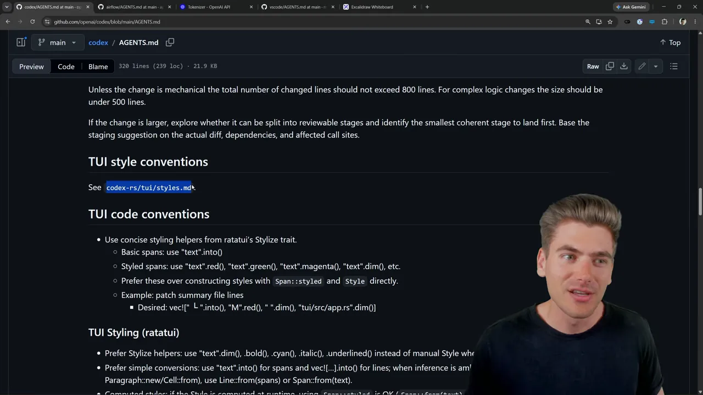
Airflow: 537줄, 약 8,600토큰
Airflow의 파일은 537줄이에요. 발표자는 이 파일을 OpenAI Platform의 토크나이저에 넣어 재 봤어요. 화면에 Tokens 8,602, Characters 36,389가 찍혀 있어요.
요즘 에이전트는 컨텍스트 윈도우가 100만 토큰쯤 되지만, 발표자 경험으로는 10만~20만 토큰쯤부터 결과가 눈에 띄게 나빠져요. 10만 토큰을 실제로 쓸 만한 양이라고 보면, AGENTS.md 하나가 그중 거의 10%를 차지해요.
VS Code: 짧아 보이지만 같은 문제
VS Code의 AGENTS.md는 처음엔 짧아서 괜찮아 보여요. 그런데 하는 일은 다른 파일 하나로 연결하는 것뿐이고, 그 copilot-instructions.md가 거대해요. 화면에는 언어 지원과 핵심 기능 목록 아래로 'Finding Related Code', 'Validating TypeScript changes' 같은 절이 계속 이어져요. 바깥 링크 없이 한 파일에 다 담았으니 결국 같은 문제예요.
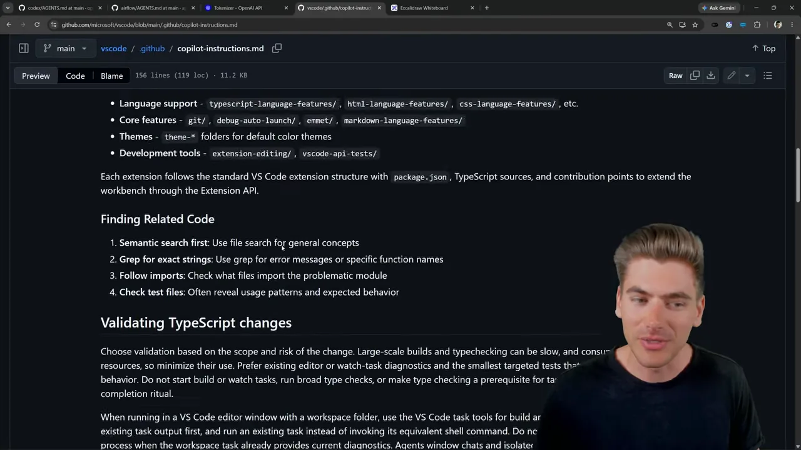
좋은 AGENTS.md 만드는 법
이제 발표자가 직접 고쳐 봐요. 데모 프로젝트 Projectly는 웹 프런트엔드와 API 백엔드가 함께 든 TypeScript 모노레포예요. 처음 AGENTS.md는 위의 예들만큼 크진 않지만, 테스트, 웹, API, CSS(Cascading Style Sheets), React, TypeScript 규칙이 한 파일에 다 들어 있어요. 발표자는 모든 요청이 TypeScript나 테스트, CSS를 다루는 건 아니고, 백엔드를 아예 안 건드리는 요청도 많다고 짚어요.
1. 영역별 규칙을 docs/로 빼요
'이건 특정 작업용 절이구나' 싶으면 그 내용을 docs/ 아래 파일로 옮겨요. CSS 규칙이라면 docs/css-conventions.md를 만들어 내용을 붙여 넣고, AGENTS.md에는 한 줄만 남겨요. API, React, TypeScript, 웹, 테스트, 배포 규칙도 똑같이 해요.
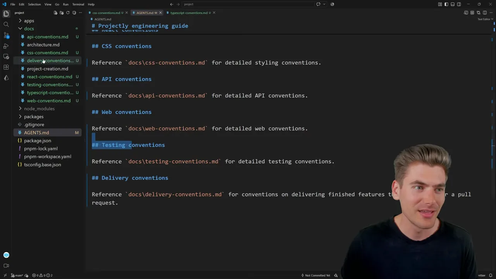
docs\css-conventions.md for detailed styling conventions.' 같은 한 줄만 남았어요. 왼쪽 docs/에 옮겨 간 파일들이 보여요.
영상 11:43에서 보기
문서끼리 서로 링크해도 괜찮아요. 아래 typescript-conventions.md의 마지막 줄은 'Every TS(TypeScript) file should be tested following docs/testing-conventions.md'예요. TypeScript 작업 중에 테스트 규칙이 필요하면 그쪽으로 따라가면 돼요.
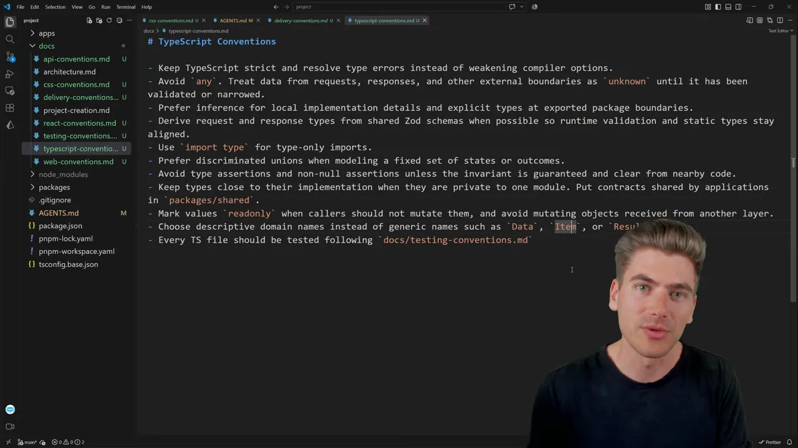
2. '시작하기' 절은 지워요
거의 모든 AGENTS.md에 있는 'Getting started' 절도 필요 없다고 해요. 화면에서 강조된 부분이 그 절이에요. 의존성 설치, 첫 실행 같은 안내는 새로 합류한 개발자용이에요. 에이전트는 이미 세팅된 프로젝트에서 코드를 쓰는 사람에 가까워요.
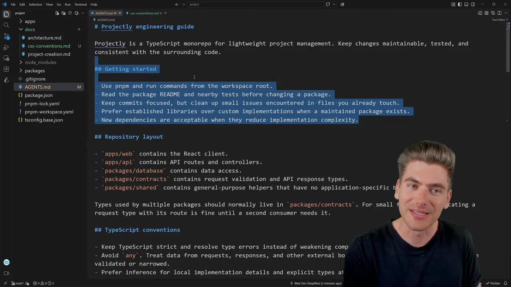
대신 남기는 건 이 정도예요.
- 프로젝트가 무엇인지 한두 문장. 에이전트가 무엇을 하려는지 아는 데 도움이 돼요.
- npm 대신 pnpm처럼 표준과 다른 점. '패키지 매니저는 pnpm'이라고만 적어요.
- 모든 작업에 쓰이는데 표준이 아닌 스크립트가 있다면 그것도요.
3. PR·배포 절차도 문서로 빼요
'Delivery' 절처럼 기능을 끝내면 린트와 Prettier를 돌리고, 문서를 고치고, 요약을 남기라는 지시도 흔해요. 이것도 PR(Pull Request) 제출용 문서로 옮기고, AGENTS.md에는 'PR을 낼 때는 이 문서를 참고하라'고만 적어요. PR을 내지 않는 요청엔 실리지 않아요.
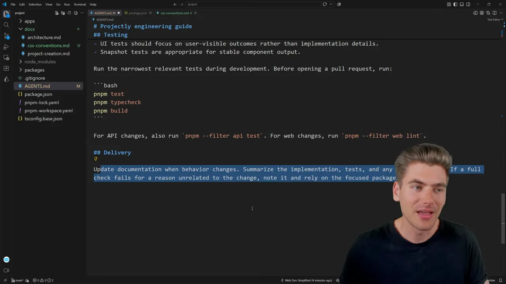
docs/delivery-conventions.md로 옮겨 가요.
영상 11:03에서 보기
4. 폴더 구조는 큰 틀만
폴더 구조를 적는 건 괜찮지만, 큰 틀까지만이에요. 화면의 'Repository layout' 절은 apps/web은 React 클라이언트, apps/api는 API 라우트처럼 폴더 단위로만 적었어요. 파일 하나하나를 가리키기 시작하면 이름과 위치가 자주 바뀌어서 금방 낡아요. 낡은 정보는 에이전트를 헷갈리게 해요.
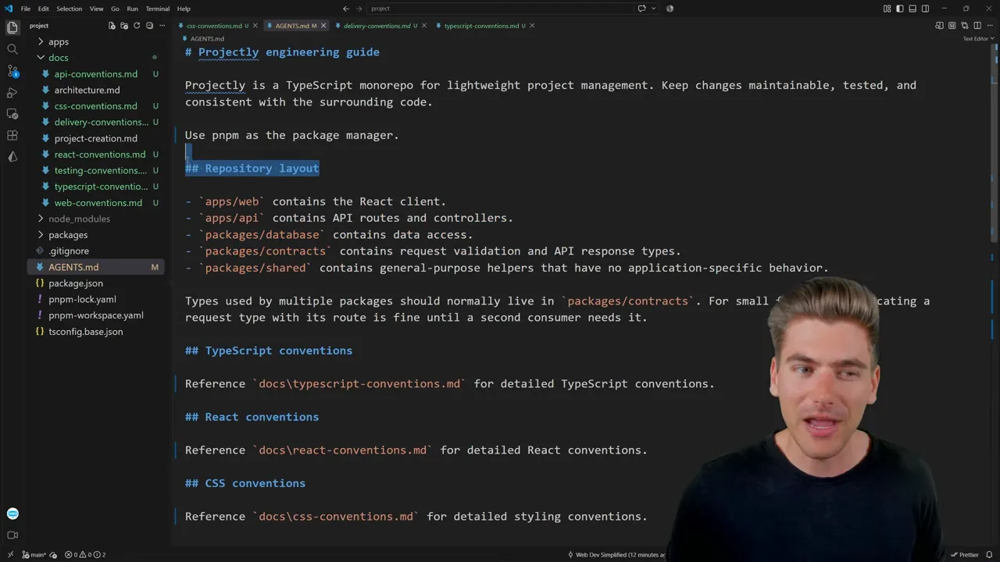
AGENTS.md의 전부예요.
영상 12:43에서 보기
정리 전과 후를 나란히 그리면 이래요.
5. AI에게 처음부터 만들라고 하지 마세요
'저장소를 읽고 AGENTS.md를 만들어 줘'라고 시키는 건 나쁜 생각이라고 발표자는 단언해요. 장황하고 쓰기 어려운 파일이 나오기 때문이에요. 짧게 시작하는 게 좋아요. 소개 몇 문장, 패키지 매니저, 폴더 구조, 이미 정해 둔 규칙이 있다면 그것까지만요.
그다음은 AI가 실제로 마음에 안 드는 일을 할 때 고쳐요. TypeScript를 이상하게 쓰면 TypeScript 규칙 파일을 만들고, 본 문제를 거기 적어요. 일어날지 모르는 실수를 미리 막으려 하지 말고, 본 실수를 알맞은 자리에 기록하라는 거예요.
I would recommend mostly only changing your agents MD when you notice the agent doing something wrong as opposed to trying to preemptively fix them from doing something.
에이전트가 뭔가 잘못하는 걸 봤을 때만 고치고, 미리 막으려 들지 말라는 뜻이에요.
— 영상 13:34
CLAUDE.md는 심볼릭 링크로
Claude Code를 쓰는 동료를 위해 CLAUDE.md를 만들 때, 많은 사람이 'Reference AGENTS.md' 한 줄만 적어 둬요. 화면이 바로 그 모습이에요.
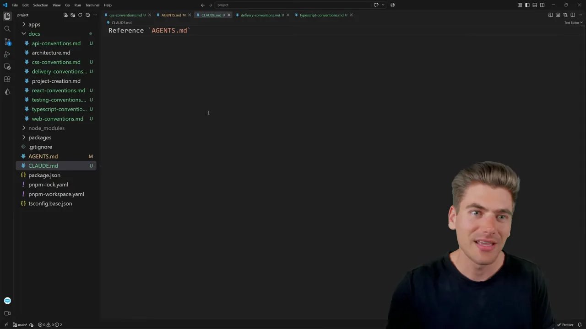
문제는 에이전트가 나중에 규칙을 덧붙일 때 생겨요. 어떤 때는 CLAUDE.md에만, 어떤 때는 AGENTS.md나 GEMINI.md에만 적어요. 그러면 파일마다 내용이 조금씩 달라져요. 발표자의 해법은 CLAUDE.md를 AGENTS.md의 심볼릭 링크로 만드는 거예요. 그러면 실제 파일은 하나뿐이라 어긋날 일이 없어요.
맥·리눅스
ln -s 뒤에 원본 파일, 그다음에 만들 링크 이름을 적어요.
ln -s AGENTS.md CLAUDE.md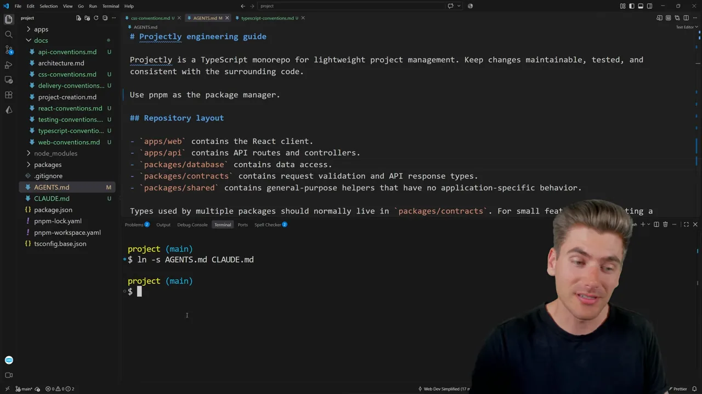
윈도우
발표자는 윈도우를 써서 명령 프롬프트(cmd)의 mklink를 써요. 순서가 반대라서 링크 이름이 먼저, 원본이 나중이에요. 처음엔 -d로 써서 문법 오류가 났고, /d로 고치자 이번엔 권한이 없다고 나왔어요. 관리자 권한으로 연 명령 프롬프트에서 다시 실행하자 'symbolic link created for CLAUDE.md <<===>> AGENTS.md'가 떴어요.
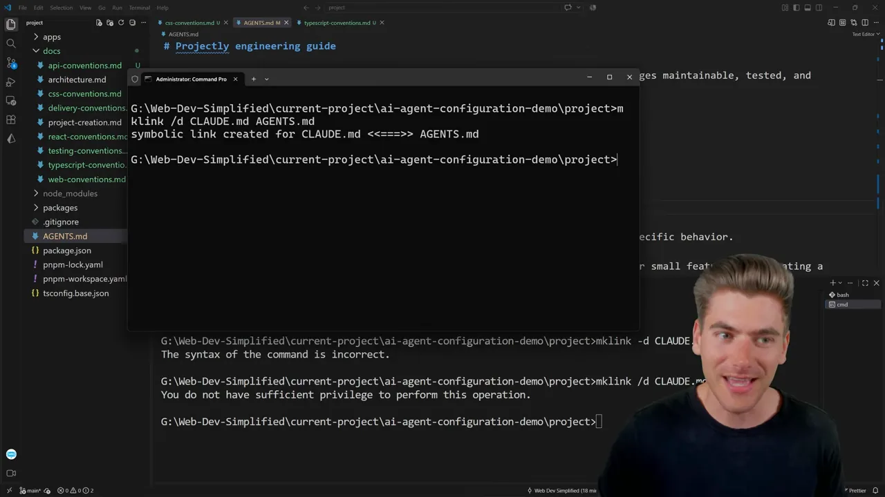
링크를 만든 뒤 발표자는 편집기에서 CLAUDE.md를 직접 열 수는 없었다고 말해요. 그래도 AGENTS.md가 바뀌면 그 내용이 CLAUDE.md에도 그대로 반영된다고 설명해요.
하위 폴더마다 AGENTS.md 두기
규모가 큰 프로젝트는 여러 패키지를 한 저장소에 담은 모노레포인 경우가 많아요. Projectly도 apps/ 아래에 백엔드인 api와 프런트엔드인 web이 있어요. 루트 AGENTS.md는 어떤 코드가 어디 들어가는지 같은 공통 내용을 맡아요.
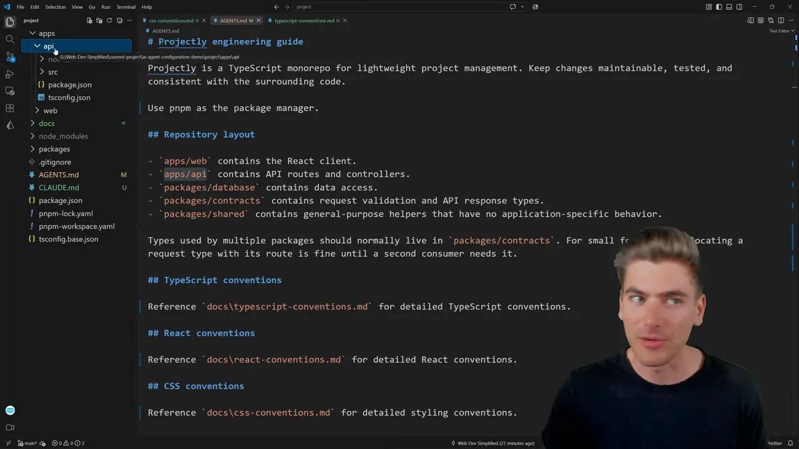
apps/api, apps/web이 오른쪽 'Repository layout'의 첫 두 줄과 같은 폴더예요.
영상 16:05에서 보기
그런데 웹은 TypeScript만, 백엔드는 Python만 쓴다면 두 규칙을 한 파일에 둘 이유가 없어요. 하위 폴더에 AGENTS.md를 새로 만들면, 바깥 파일을 먼저 읽고 그 폴더의 파일을 이어서 읽어요. 발표자는 docs/web-conventions.md의 내용을 통째로 apps/web/AGENTS.md로 옮겨요. 웹 규칙은 웹 폴더에서만 의미가 있으니까요.
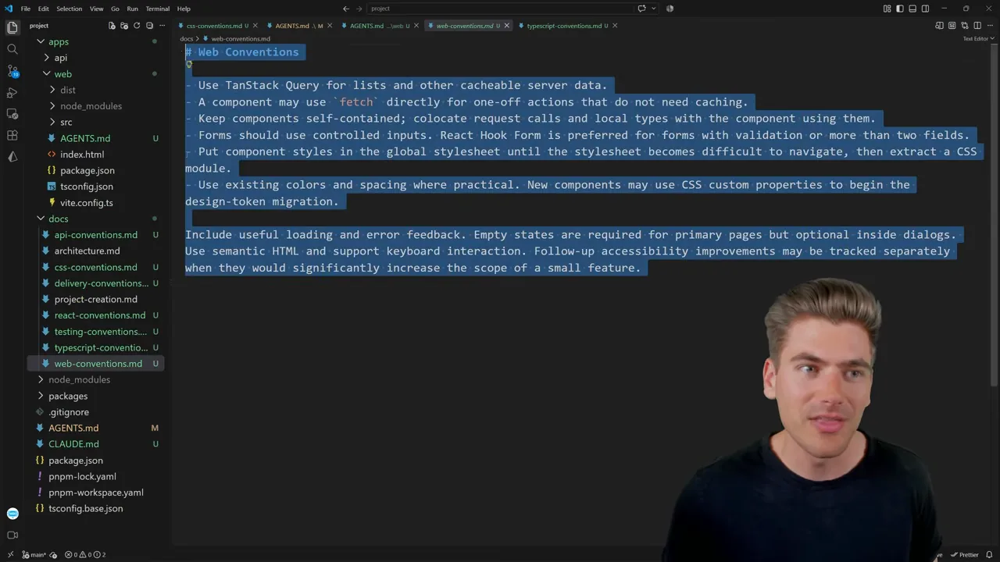
apps/web/AGENTS.md로 옮겨 가요. 그러면 docs/web-conventions.md는 지워도 돼요.
영상 17:05에서 보기
API 규칙도 똑같이 apps/api/AGENTS.md로 옮겨요. 그러면 루트 파일은 전체 공통 내용만 남아요. 발표자는 하위 파일에도 그 패키지가 무엇인지 한 문장쯤 덧붙이면 좋다고 말해요.
어느 파일이 실리는지는 실행 위치로 정해져요
발표자가 강조하는 점이에요. 에이전트를 루트에서 열면 루트 AGENTS.md만 실려요. cd apps/api로 들어가서 열면 루트와 apps/api의 파일 둘 다 실려요. 에이전트가 어디를 고치느냐가 아니라 어디서 실행됐느냐가 기준이라는 설명이에요.
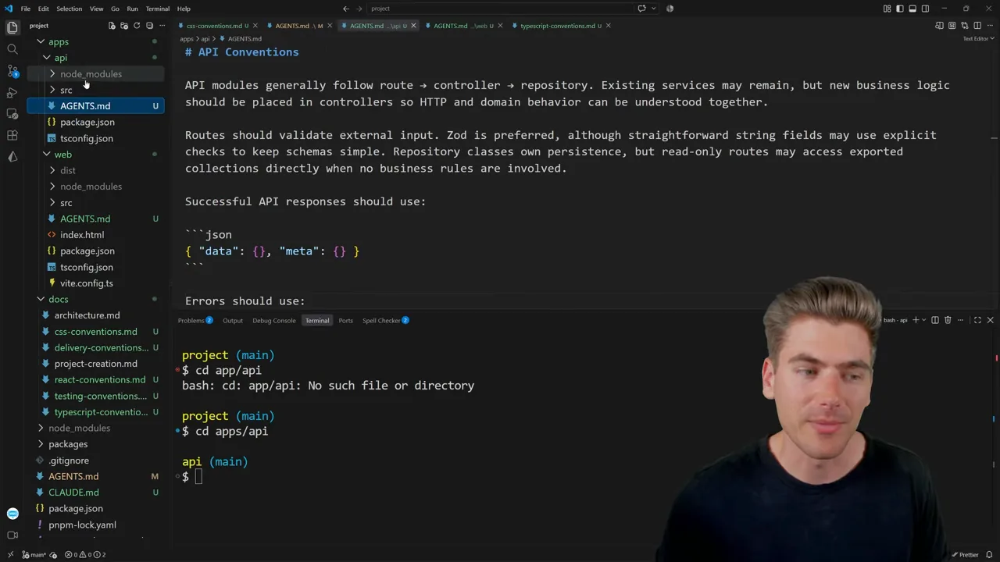
project에서 api로 바뀌었어요. 여기서 에이전트를 켜면 두 파일이 함께 실린다는 거예요.
영상 18:20에서 보기
apps/web의 규칙은 실리지 않아요. 발표자 설명을 그대로 옮겼어요.그래서 이 방식은 한 저장소에 여러 프로젝트가 든 모노레포에서 가장 쓸모가 있다고 정리해요.
스킬은 어디에 쓰나요?
정리를 마친 발표자는 처음 화이트보드로 돌아가요. AGENTS.md와 CLAUDE.md는 다뤘어요. Docs는 특별한 게 아니라, 주로 AI가 읽지만 사람도 읽을 수 있는 마크다운 문서를 모아 둔 곳이에요. 남은 건 스킬이에요.
인증, 데이터베이스, TypeScript, React처럼 다룰 게 많아지면 AGENTS.md와 문서만으로는 금방 부풀어요. AI가 그 많은 정보 중 지금 무엇이 필요한지 고르기도 어려워져요. 스킬은 특정 작업을 할 때만 끼워 넣는 문서예요.
스킬 설치하기
보통 npx skills add 뒤에 스킬 주소를 붙여 설치해요. 쓸 만한 스킬은 skills.sh 사이트에서 찾을 수 있어요. 영상은 Anthropic의 algorithmic-art 스킬을 설치해요. 화면에 설치 경로 .\agents\skills\algorithmic-art와 보안 점검 결과가 뜨고, 'Proceed with installation?'에 Yes를 고르면 끝나요.
npx skills add https://github.com/anthropics/skills --skill algorithmic-art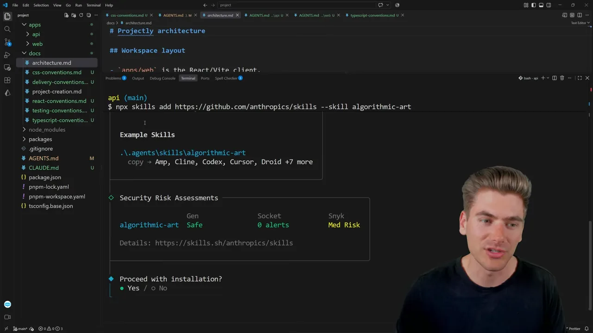
apps/api에 있었기 때문에 스킬도 그 폴더 아래에 생겼어요.
영상 20:27에서 보기
SKILL.md의 머리말은 매번 실려요
스킬마다 SKILL.md가 있고, 맨 위에 name과 description이 적혀 있어요. 화면의 편집기 툴팁이 이 부분을 정확히 설명해요. 'The description is added to every request and will be used by the agent to decide when to load the skill', 즉 설명은 모든 요청에 붙고 에이전트가 언제 이 스킬을 읽을지 판단하는 데 쓰인다는 뜻이에요.
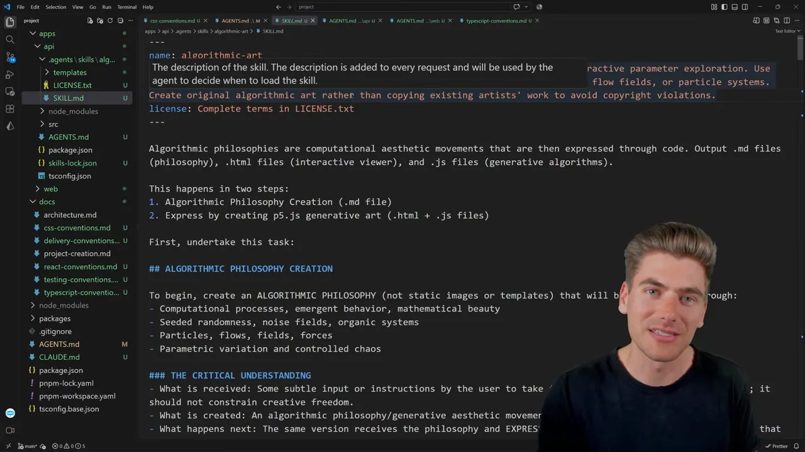
그래서 스킬을 100개 깔면 이름과 설명 100개가 모든 요청에 붙어 컨텍스트가 지저분해져요. AI는 이 목록을 보고 '알고리즘 아트를 만들어야 하니 이 스킬이 맞겠다'고 판단한 다음에야 본문 전체를 읽어요. 발표자는 이 algorithmic-art 스킬도 본문이 너무 길어서 좋은 예는 아니라고 덧붙여요. 더 잘게 나눠야 읽기 쉽다는 거예요.
무엇을 AGENTS.md에, 무엇을 스킬에
발표자의 기준은 단순해요. 거의 모든 작업에 해당하는 일반 정보는 AGENTS.md로 가요. 'TypeScript를 우리 방식으로 어떻게 쓰나', '전체 폴더 구조는 어떤가' 같은 거예요. 정확히는 AGENTS.md에서 링크한 문서에 두는 경우가 더 많아요. 인증처럼 가끔만 손대는 특정 작업은 스킬로 만들어요. 그러면 인증 작업을 할 때만 그 스킬이 읽히고, AGENTS.md에는 인증 이야기가 한 줄도 없어도 돼요.
영상에 나온 예를 자리별로 모으면 이래요.
| 어디에 두나 | 언제 실리나 | 영상에 나온 예 |
|---|---|---|
AGENTS.md | 모든 요청 | 프로젝트 소개, pnpm 사용, 큰 틀의 폴더 구조, 문서 링크 |
docs/ 문서 | 링크를 따라가야 할 때 | CSS·API·React·TypeScript·테스트 규칙, PR 제출 절차 |
하위 폴더 AGENTS.md | 그 폴더에서 실행할 때 | apps/web의 웹 규칙, apps/api의 API 규칙 |
| 스킬 | 이름·설명은 매번, 본문은 고를 때 | 인증 처리, algorithmic-art |
flowchart LR
A["새로 적을 규칙"] --> B{"거의 모든 작업에 해당하나요?"}
B -- "예" --> C["AGENTS.md 또는 거기서 링크한 docs 문서"]
B -- "아니요, 특정 작업 하나" --> D["스킬로 분리"]
스킬은 직접 부를 수도 있어요. 영상에서는 Pi라는 에이전트를 쓰는데, 대부분의 편집기처럼 /skill을 입력해 스킬 목록에서 하나를 골라 프롬프트와 함께 보낼 수 있다고 해요. '이 인증 작업을 할 때 이 스킬을 써'라고 콕 집어 말할 수 있으니, 특정 작업용으로 더 쓸모가 있어요.
결국 작은 AGENTS.md에서 시작해, 필요할 때만 문서와 스킬로 뻗어 가는 구조를 만들라는 게 영상의 결론이에요. 적은 정보만 매번 싣고, 나머지 넓은 정보는 필요할 때 찾아가게 하는 거예요.